Лекции
Лекция 20
Режимы работы усилительных каскадов.
-
Режим класса А.
В зависимости от постоянного тока и падения напряжения на активном приборе усилительного каскада, а также от значения входного усиливаемого сигнала принято различать следующие режимы работы: режимы А,В1,В2,С,Д; промежуточные режимы АВ1,АВ2.
Режим класса А- это режим работы активного прибора, при котором ток в выходной цепи протекает в течении всего периода входного сигнала. Достоинством режиам А является, что при нем возникает малые нелинейные искажения.
Параметры: 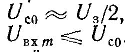 ŋ<25%
Режим класса А используется во всех каскадах предварительного усиления, а также в маломощных выходных каскадах.
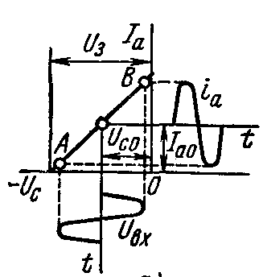 -
Режим класса В1, В2.
Это режим работы активного прибора при котором ток через него протекает в течении примерно половины периода входного сигнала. Половину угла, соответствующего моменту прекращения тока через активный прибор называют углом отсечки Ɵ. При идеальном режиме Ɵ=π/2. Режим В используют в двухтактных выходных каскадах имеющий высокий к.п.д.
Параметры:- для режима класса В1: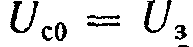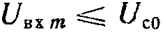
- для режима класса В2: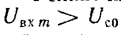
- для режима класса В1: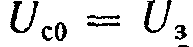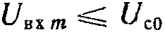
-
Режим класса С.
Это режим работы активного прибора, при котором ток через него протекает в течении промежутка времени, меньшего половины периода входного сигнала. Используется в генераторах.
Параметры: 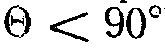 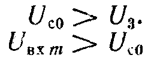
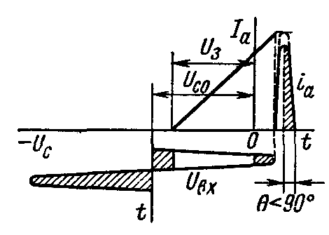 -
Режим класса Д.
Это режим работы, при котором активный прибор находится только в двух состояниях: или полностью открыт, или полностью закрыт.
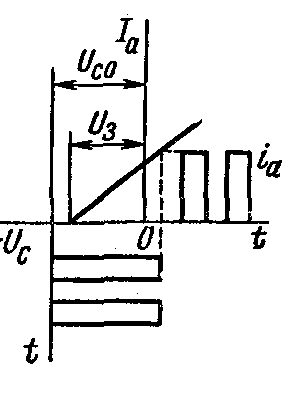 -
Режимы класса АВ1,АВ2.
Параметры режима класса АВ1: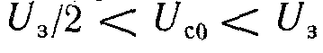 90<Ɵ<180
90<Ɵ<180
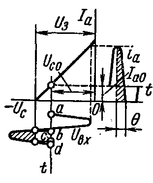
Параметры режима класса АВ2: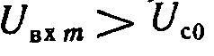
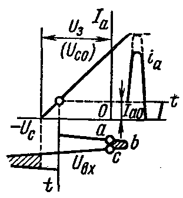
- Виды режим работы усилителей
- Достоинсвто и недостатки режимов работы усилителей